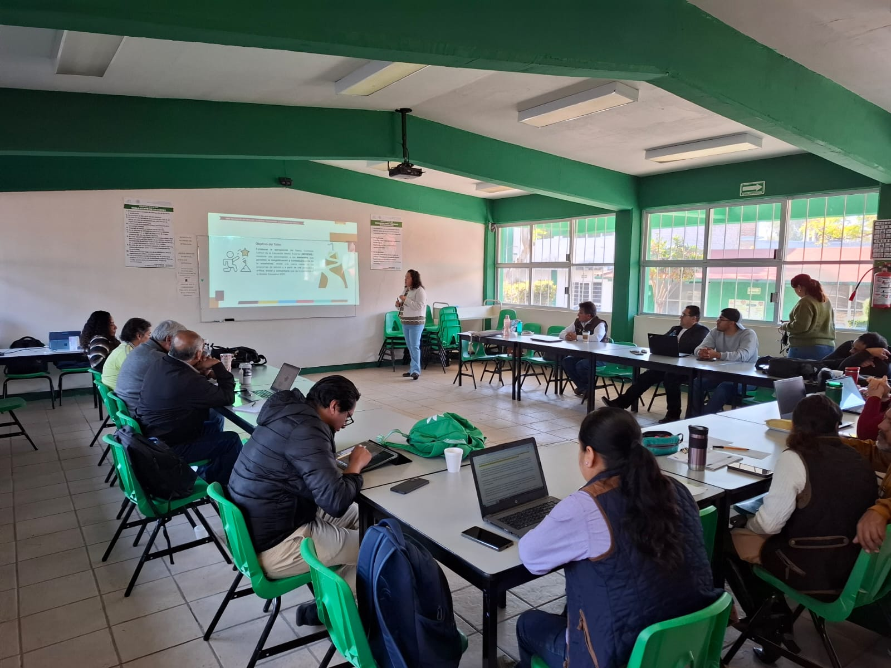
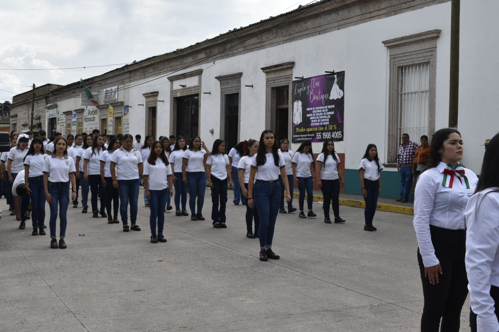

“Aprender-haciendo y enseñar-produciendo”
Somos una institución de Nivel Medio Superior pertenecientes a la nidad de Educación Media Superior Tecnológica Agropecuaria y Ciencias del Mar que ofrece educación de calidad bajo las exigencias de la Reforma Educativa misma que nos acredita como pertenecientes al Padrón de Calidad des Sistema Nacional de Educación Media Superior Nivel III.
Misión
Somos una institución de nivel medio superior que ofrecemos un Bachillerato Tecnológico basado en competencias, con una formación integral y un perfil de egreso, que permite continuar con estudios superiores y/o incorporarse al sector productivo, fortaleciendo la capacitación, asistencia técnica y promoviendo el desarrollo sustentable del entorno, coadyuvando a la pertinencia en la oferta educativa.

Visión
Ser una escuela de nivel Medio Superior con personal Certificado, que pertenezca al Padrón de Calidad des Sistema Nacional de Educación Media Superior, contando con un amplio reconocimiento social en el entorno y logrando que nuestros egresados continúen con sus estudios superiores y/o transiten al mercado laboral.
El Centro de Bachillerato Tecnológico Agropecuario (CBTA) No. 235 te ofrece las siguientes carreras:
Técnico Agropecuario
Formación enfocada al desarrollo agrícola y pecuario sustentable.
Técnico en Ofimática
Capacitación tecnológica y administrativa enfocada al entorno digital.
Técnico en Administración para el Emprendimiento Agropecuario
Gestión empresarial y emprendimiento aplicado al sector agropecuario.
Te Ofrecemos Dos Modalidades de Estudio
Formación académica flexible y de calidad para todos los estudiantes.
Sistema Escolarizado
La estructura curricular se sitúa en tres componentes:
a. Formación básica
Se articula con la educación básica y con la del tipo superior; aborda los conocimientos esenciales de la ciencia, la tecnología y las humanidades. Además, aporta fundamentos a la formación propedéutica y profesional mediante asignaturas académicas.
b. Formación propedéutica
Profundiza en los conocimientos disciplinares para favorecer una mejor incorporación de los egresados a instituciones de nivel superior.
El estudiante puede elegir alguna de las siguientes áreas:
c. Formación profesional
A partir del segundo semestre, cada carrera se organiza en módulos con contenidos basados en estándares de competencia, permitiendo desarrollar habilidades profesionales y técnicas para el entorno laboral y académico.

Sistema Auto-Planeado de Educación Tecnológica Agropecuaria (SAETA)
El Sistema Auto-planeado de Educación Tecnológica Agropecuaria (SAETA sabatino), es una alternativa educativa dirigida a jóvenes y adultos que desean continuar sus estudios y prepararse técnica y culturalmente mediante una modalidad flexible, accesible y autogestiva.
Está diseñado especialmente para personas que por cuestiones laborales, económicas, familiares o de distancia no pueden asistir diariamente al sistema escolarizado tradicional.
¿Quiénes pueden ingresar?
Personas mayores de 18 años o jóvenes con secundaria terminada.
Modalidad Flexible
Ideal para quienes trabajan o cuentan con poco tiempo disponible.
Certificación
Obtén certificado de bachillerato y título técnico agropecuario.
Aprendizaje Autónomo
30% acompañamiento docente y 70% trabajo independiente.
Campos Propedéuticos
Físico Matemático
Químico Biológico
Económico Administrativo
¿Qué carreras técnicas se ofrecen en esta modalidad?
Actualmente se oferta la Carrera de Técnico Agropecuario, conformada por los siguientes módulos profesionales:
Recursos y Apoyo
Los estudiantes cuentan con acceso a laboratorios, talleres, aulas de cómputo, bibliotecas y espacios de práctica. Además, pueden recibir orientación de docentes capacitados, tutores académicos y orientadores vocacionales.
También existe la posibilidad de acceder a becas mediante programas nacionales de apoyo educativo para facilitar la conclusión exitosa del bachillerato.